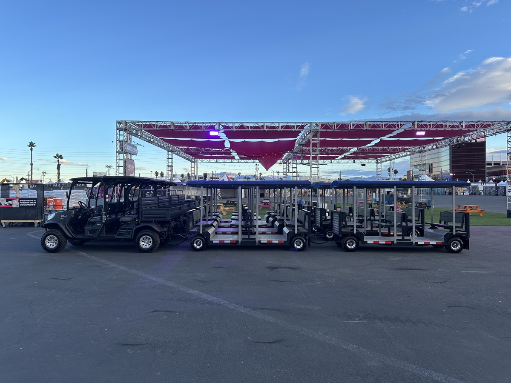

Mega-events · Lessons from World Cup 2026
They planned how fans get to the stadium.
Nobody planned the last 500 yards.
Every World Cup host city built a transit plan, and most of it worked. Every plan still ended at the stadium perimeter. FlexTram closes that gap for the events that come next: pop-up tram loops from the transit drop-off to the gate, up to 27 fans per trip with one driver.
The blind spot
Billions on transit.
Nothing for the last 500 yards.
The proof case
World Cup 2026: the transit worked.
The last stretch didn't.
The 2026 FIFA World Cup played 104 matches in 16 stadiums across the United States, Canada, and Mexico, ending with Spain's 1-0 win over Argentina at MetLife Stadium on July 19. Going in, the worry was regional transit. It largely held up. NJ Transit ran trains from Penn Station to Secaucus about every 15 minutes, Houston ran METRORail to NRG Park, and Miami stood up the Game Day Express from four transit hubs.
What no host city planned was the stretch after the vehicle stopped. At MetLife, AT&T Stadium, Gillette, NRG, and Hard Rock, fans still crossed parking aprons and security perimeters on foot. Leaving was harder than arriving: at the Meadowlands, even a private car took nearly twice as long to get out as to get in. We went through it city by city in what the World Cup actually proved.
The next round of big events is already on the calendar: Super Bowls, College Football Playoff games, the LA 2028 Olympics. Each one will hand fans off from a regional transit plan at a stadium perimeter, and each one will leave the same last 500 yards to cover.
The solution
What theme parks figured out decades ago.
Applied to the biggest events.
Theme parks solved onsite transportation a long time ago: a compact tram on a fixed loop, predictable schedule, high capacity. FlexTram applies the same principle to the temporary, dynamic environment of a major sporting event — deploying a pop-up tram system in hours on any surface.
One FlexTram moves up to 27 fans per trip with one driver on a route fans can count on. Where a 50-cart golf fleet needs 50 drivers and still can't move volume, a handful of FlexTrams handle the same throughput with a fraction of the labor and none of the chaos.
ADA accessibility is standard on every unit. No special configuration. No separate fleet. Every fan boards the same system. And when the match ends? FlexTram stores compactly — no dedicated lot, no idle fleet between events.
This isn't a concept. FlexTram already operates at the largest, most complex live events in the country — festivals, stadiums, motorsports venues. We run in parking lots, on dirt, through crowds of hundreds of thousands, in extreme heat, at night, on surfaces that change event to event.
Driver labor — FlexTram vs. alternatives
One FlexTram
27 passenger capacity
1 driver required
Five 6-seat golf carts
25 passenger capacity
5 drivers required
Two sprinter vans
28 passenger capacity
2 drivers required
Labor only. Excludes benefits, fuel, maintenance, and insurance. Golf cart drivers ~$31k/yr · Sprinter van drivers ~$38k/yr · FlexTram operator ~$31k/yr.
Specifications
Where we operate
Common questions
Can FlexTram deploy at several stadiums during the same event?
Yes. FlexTram operates fleet-scale deployments across multiple venues at once. We already run simultaneous operations at the largest live events in the country, including festivals, stadiums, and motorsports venues.
How does FlexTram handle the last 500 yards from transit to stadium gates?
FlexTram runs fixed-route tram loops between transit drop-off points, remote parking lots, fan zones, and stadium gates. Fans always know where to board and when the next tram arrives — no waiting for a dispatched golf cart.
Is FlexTram ADA compliant for major-event accessibility requirements?
ADA accessibility is standard on every FlexTram. Accessible boarding and appropriate aisle widths are included on every unit — no special configuration needed for fans with mobility requirements.
How quickly can FlexTram be set up at a stadium for a major event?
FlexTram deploys in hours on any surface — asphalt, dirt, grass, or gravel. Define your route between transit hubs and gates, and start running. No permanent infrastructure required.
Can FlexTram handle post-event egress for 70,000+ fans?
FlexTram excels at post-event evacuation. With up to 27 passengers per trip and rapid turnaround on a fixed loop, it clears venue perimeters significantly faster than scattered golf cart fleets. This is exactly what we do at the largest events in the country.
What did the 2026 World Cup show about stadium transportation?
Regional transit largely worked. NJ Transit, Houston's METRORail and Miami's Game Day Express moved fans to the stadiums. The gap was the last stretch from the transit drop-off to the gate, which fans crossed on foot in every U.S. host city we followed, and leaving was slower than arriving.
The World Cup proved the gap. Let's talk.
The tournament is over and the verdict is in: the regional transit largely worked, and the last stretch from the transit node to the gate was still a walk — in all five U.S. host cities. Those venues still host NFL seasons, concerts, motorsports, and the next round of mega-events. Planning one? Tell us about your venue and we'll build a custom plan that moves more fans with fewer drivers.
Other industries
Get in Touch →